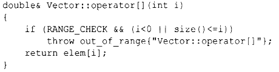
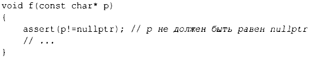

⇐3.5.3 Альтернативные варианты обработки ошибок 3.5.5 Статические проверки⇒
В настоящее время нет общего и стандартного способа написания дополнительных тестов времени выполнения для инвариантов, предусловий и т.п. Для включения в С++20 предложен механизм контракта [20, 21]. Его цель состоит в том, чтобы поддержать пользователей, которые для обеспечения корректной работы программы хотели бы положиться на тестирование с длительными проверками времени выполнения, но при развертывании производственной версии кода получить код с минимальными проверками. Такой подход популярен в высокопроизводительных приложениях в организациях, которые в своей работе опираются на обширную систематическую проверку.
До сих пор для этого приходилось использовать различные механизмы, разработанные отдельно для каждого конкретного случая. Например, можно воспользоваться макросом командной строки для управления проверкой времени выполнения:
Стандартная библиотека предлагает отладочный макрос assert () для проверки выполнения условий во время выполнения, например:
Если условие assert() не выполняется в "отладочном режиме", программа завершается. Если программа работает не в отладочном режиме, assert() не выполняет никаких проверок. Это очень грубая и негибкая возможность, которой, тем не менее, часто оказывается вполне достаточно.